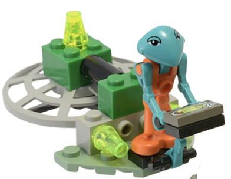

Production Design Target
ЗАВЕРШЕНА ЗБІРКА · LEGO 1195
Незмінений вигляд джерельної моделі. Crop із повного фото набору; сусідній людський rover прибрано з краю кадру.

unit.martians.aero_skiff · target mode: SOURCE_LOCKED../tools/verify.sh --targeted design-package. PNG-захоплення сторінки ще не підготовлено.